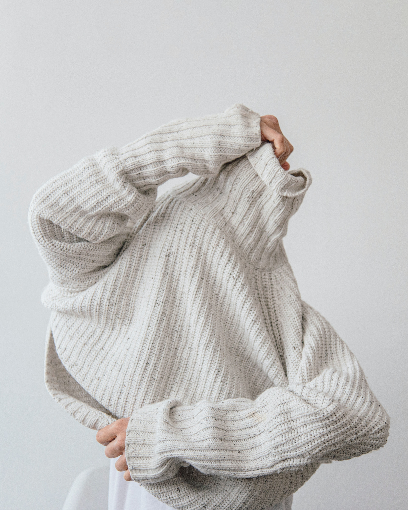

코로나바이러스로 인해 현재 우리들의 삶에서
외출 시간은 현저히 줄어들고 있습니다.
전국적으로 사회적 거리두기를 시행하는 요즘
피치못한 사정으로
외출을 해야하는 경우가 있습니다.
오랜만의 외출로 인해 날씨에 따른 온도를 체감하기 어려울 수 있습니다.
그리고 거기에 맞는 옷차림을 생각하는데 많은 시간이 걸릴 수도 있습니다.
혹은 매일 아침마다 바쁜 출근 준비로 인해
날씨에 따른 코디를 정하기 힘든 경우가 빈번합니다.
3日 コーデ가 바쁜 현대인의 시간과 편의를 위해 날씨별 코디를 제안합니다.
At this time, it is hard to spend time outdoors during the COVID-19 pandemic.
But what if you have to go out for some special occasions or meetings or
hard to decide the coordination
according to the weather during the busy morning?
Our 3日 コーデ suggest a coordination by weather for people in order to
save their own time to choose their clothes efficiently.